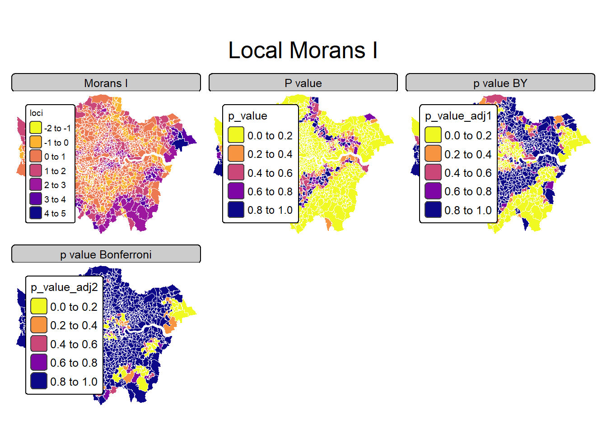

pkgs <- c("sf", "mapview", "spdep", "spatialreg", "tmap", "viridisLite", "gstat") # note: load spdep first, then spatialreg
lapply(pkgs, require, character.only = TRUE)4 Detecting Spatial Dependence
Required packages
Session info
sessionInfo()R version 4.3.1 (2023-06-16 ucrt)
Platform: x86_64-w64-mingw32/x64 (64-bit)
Running under: Windows 10 x64 (build 19044)
Matrix products: default
locale:
[1] LC_COLLATE=English_United Kingdom.utf8
[2] LC_CTYPE=English_United Kingdom.utf8
[3] LC_MONETARY=English_United Kingdom.utf8
[4] LC_NUMERIC=C
[5] LC_TIME=English_United Kingdom.utf8
time zone: Europe/London
tzcode source: internal
attached base packages:
[1] stats graphics grDevices utils datasets methods
[7] base
other attached packages:
[1] gstat_2.1-1 viridisLite_0.4.2 tmap_3.3-3
[4] spatialreg_1.2-9 Matrix_1.5-4.1 spdep_1.2-8
[7] spData_2.2.2 mapview_2.11.0 sf_1.0-13
loaded via a namespace (and not attached):
[1] tidyselect_1.2.0 dplyr_1.1.2 fastmap_1.1.1
[4] leaflet_2.1.2 TH.data_1.1-2 XML_3.99-0.14
[7] digest_0.6.31 lifecycle_1.0.3 LearnBayes_2.15.1
[10] survival_3.5-5 terra_1.7-29 magrittr_2.0.3
[13] compiler_4.3.1 rlang_1.1.1 tools_4.3.1
[16] utf8_1.2.3 FNN_1.1.3.2 knitr_1.43
[19] htmlwidgets_1.6.2 sp_1.6-1 classInt_0.4-9
[22] RColorBrewer_1.1-3 multcomp_1.4-24 abind_1.4-5
[25] KernSmooth_2.23-21 expm_0.999-7 leafsync_0.1.0
[28] grid_4.3.1 stats4_4.3.1 fansi_1.0.4
[31] xts_0.13.1 e1071_1.7-13 leafem_0.2.0
[34] colorspace_2.1-0 scales_1.2.1 MASS_7.3-60
[37] dichromat_2.0-0.1 cli_3.6.1 mvtnorm_1.2-2
[40] rmarkdown_2.22 intervals_0.15.3 generics_0.1.3
[43] rstudioapi_0.14 tmaptools_3.1-1 DBI_1.1.3
[46] proxy_0.4-27 splines_4.3.1 stars_0.6-1
[49] parallel_4.3.1 s2_1.1.4 base64enc_0.1-3
[52] vctrs_0.6.3 boot_1.3-28.1 webshot_0.5.4
[55] sandwich_3.0-2 jsonlite_1.8.5 crosstalk_1.2.0
[58] units_0.8-2 glue_1.6.2 lwgeom_0.2-13
[61] codetools_0.2-19 deldir_1.0-9 raster_3.6-20
[64] munsell_0.5.0 tibble_3.2.1 pillar_1.9.0
[67] htmltools_0.5.5 satellite_1.0.4 R6_2.5.1
[70] wk_0.7.3 evaluate_0.21 lattice_0.21-8
[73] png_0.1-8 class_7.3-22 Rcpp_1.0.10
[76] coda_0.19-4 nlme_3.1-162 spacetime_1.3-0
[79] xfun_0.39 zoo_1.8-12 pkgconfig_2.0.3 Reload data from pervious session
load("_data/msoa2_spatial.RData")4.1 Global Autocorrelation
If spatially close observations are more likely to exhibit similar values, we cannot handle observations as if they were independent.
\[ \mathrm{E}(\varepsilon_i\varepsilon_j)\neq \mathrm{E}(\varepsilon_i)\mathrm{E}(\varepsilon_j) = 0 \]
This violates a basic assumption of the conventional OLS model. We will talk more about whether that is good or bad (any guess?).
4.1.1 Visualization
There is one very easy and intuitive way of detecting spatial autocorrelation: Just look at the map. We do so by using tmap for plotting the share of home owners.
mp1 <- tm_shape(msoa.spdf) +
tm_fill(col = "per_owner",
#style = "cont",
style = "fisher", n = 8,
title = "Median",
palette = viridis(n = 8, direction = -1, option = "C"),
legend.hist = TRUE) +
tm_borders(col = "black", lwd = 1) +
tm_layout(legend.frame = TRUE, legend.bg.color = TRUE,
#legend.position = c("right", "bottom"),
legend.outside = TRUE,
main.title = "Percent home owners",
main.title.position = "center",
title.snap.to.legend = TRUE)
mp1 We definitely see some clusters with spatial units having a low share of home owner (e.g. in the city center), and other clusters where home ownership is high (e.g. suburbs in the south and east, such as Bromley or Havering).
However, this is (to some degree) dependent on how we define cutoffs and coloring of the map: the Modifiable Areal Unit Problem (Wong 2009).
Question
Which of the following three checkerboards has no (or the lowest) autocorrelation?

Would your answer be the same if we would aggregate the data to four larger areas / districts using the average within each of the four districts?
4.1.2 Moran’s I
The most common and well known statistic for spatial dependence or autocorrelation is Moran’s I, which goes back to Moran (1950) and Cliff and Ord (1972). For more extensive materials on Moran’s I see for instance Kelejian and Piras (2017), Chapter 11.
To calculate Moran’s I, we first define a neighbours weights matrix W.
Global Moran’s I test statistic: \[ \begin{equation} \boldsymbol{\mathbf{I}} = \frac{N}{S_0} \frac{\sum_i\sum_j w_{ij}(y_i-\bar{y})(y_j-\bar{y})} {\sum_i (y_i-\bar{y})^2}, \text{where } S_0 = \sum_{i=1}^N\sum_{j=1}^N w_{ij} \end{equation} \] It is often written with deviations \(z\)
\[ \begin{equation} \boldsymbol{\mathbf{I}} = \frac{N}{S_0} \frac{\sum_i\sum_j w_{ij}(z_i)(z_j)} {\sum_i (z_i)^2}, \text{where } S_0 = \sum_{i=1}^N\sum_{j=1}^N w_{ij} \end{equation} \]
Note that in the case of row-standardized weights, \(S_0 = N\). The \(I\) can be interpreted as: Relation of the deviation from the mean value between unit \(i\) and neighbours of unit \(i\). Basically, this measures correlation between neighbouring values.
Negative values: negative autocorrelation
Around zero: no autocorrelation
Positive values: positive autocorrelation
To calculate Moran’s I, we first need to define the relationship between units. As in the previous example, we define contiguity weights and distance-based weights.
# Contiguity (Queens) neighbours weights
queens.nb <- poly2nb(msoa.spdf,
queen = TRUE,
snap = 1) # we consider points in 1m distance as 'touching'
queens.lw <- nb2listw(queens.nb,
style = "W")
# Neighbours within 3km distance
coords <- st_geometry(st_centroid(msoa.spdf))Warning: st_centroid assumes attributes are constant over
geometriesdist_3.nb <- dnearneigh(coords,
d1 = 0, d2 = 3000)
idw.lw <- nb2listwdist(dist_3.nb,
x = coords, # needed for idw
type = "idw", # inverse distance weighting
alpha = 1, # the decay parameter for distance weighting
style = "minmax") # for eigenvalue normalizationSubsequently, we can calculate the average correlation between neighbouring units.
For contiguity weights, we get:
# Global Morans I test of housing values based on contiguity weights
moran.test(msoa.spdf$per_owner, listw = queens.lw, alternative = "two.sided")
Moran I test under randomisation
data: msoa.spdf$per_owner
weights: queens.lw
Moran I statistic standard deviate = 38.161, p-value <
2.2e-16
alternative hypothesis: two.sided
sample estimates:
Moran I statistic Expectation Variance
0.728706855 -0.001018330 0.000365663 And for inverse distance weighting, we get:
# Global Morans I test of housing values based on idw
moran.test(msoa.spdf$per_owner, listw = idw.lw, alternative = "two.sided")
Moran I test under randomisation
data: msoa.spdf$per_owner
weights: idw.lw
Moran I statistic standard deviate = 65.853, p-value <
2.2e-16
alternative hypothesis: two.sided
sample estimates:
Moran I statistic Expectation Variance
0.6838957350 -0.0010183299 0.0001081719 Interpretation: In both cases, we have very strong autocorrelation between neighbouring/closer units (~.7). It barely matters which of the weights matrices we use. This autocorrelation is highly significant. we can thus reject the Null that units are independent of each other (at least at this spatial level and for the share of home owners).
4.1.3 Residual-based Moran’s I
We can also use the same Moran’s I test to inspect spatial autocorrelation in residuals from an estimated linear model.
Let’s start with an intercept only model.
lm0 <- lm(per_owner ~ 1, msoa.spdf)
lm.morantest(lm0, listw = queens.lw, alternative = "two.sided")
Global Moran I for regression residuals
data:
model: lm(formula = per_owner ~ 1, data = msoa.spdf)
weights: queens.lw
Moran I statistic standard deviate = 38.177, p-value <
2.2e-16
alternative hypothesis: two.sided
sample estimates:
Observed Moran I Expectation Variance
0.7287068548 -0.0010183299 0.0003653613 This is exactly what we have received in the general case of Moran’s I.
Now, lets add some predictors. For instance, the distance to the city centre, and the population density may be strongly related to the home ownership rates and explain parts of the spatial dependence.
### Distance to city center
# Define centre
centre <- st_as_sf(data.frame(lon = -0.128120855701165,
lat = 51.50725909644806),
coords = c("lon", "lat"),
crs = 4326)
# Reproject
centre <- st_transform(centre, crs = st_crs(msoa.spdf))
# Calculate distance
msoa.spdf$dist_centre <- as.numeric(st_distance(msoa.spdf, centre)) / 1000
# hist(msoa.spdf$dist_centre)
### Run model with predictors
lm1 <- lm(per_owner ~ dist_centre + POPDEN, msoa.spdf)
lm.morantest(lm1, listw = queens.lw, alternative = "two.sided")
Global Moran I for regression residuals
data:
model: lm(formula = per_owner ~ dist_centre + POPDEN, data =
msoa.spdf)
weights: queens.lw
Moran I statistic standard deviate = 22.674, p-value <
2.2e-16
alternative hypothesis: two.sided
sample estimates:
Observed Moran I Expectation Variance
0.4298146060 -0.0024065617 0.0003633607 There is still considerable auto-correlation in the residuals. However, we have reduce it by a substantial amount with two very simple control variables.
4.1.4 Semivariogram
The sample variogram \(\gamma(h)\) for distance intervals \(h_i\) describes the average square difference between the points in this distance interval:
\[ \hat{\gamma}(h_i) = \frac{1}{2N(h_i)}\sum_{j=1}^{N(h_i)}(z(s_i)-z(s_i+h'))^2, \ \ h_{i,0} \le h' < h_{i,1} \tag{4.1}\]
with the number of available pairs \(N(h_i)\) in each distance interval \(h_i\). Basically, it is the variance within each distance interval.
For more information, see for instance the Geospatial Data Science in R by Zia Ahmed or Pebesma and Bivand (2023).
To calculate the empirical semi-vriogram, we can use the package gstat with the function variogram().
# Variogram No2
v.no2 <- variogram(no2 ~ 1, msoa.spdf)Please note that rgdal will be retired during October 2023,
plan transition to sf/stars/terra functions using GDAL and PROJ
at your earliest convenience.
See https://r-spatial.org/r/2023/05/15/evolution4.html and https://github.com/r-spatial/evolution
rgdal: version: 1.6-7, (SVN revision 1203)
Geospatial Data Abstraction Library extensions to R successfully loaded
Loaded GDAL runtime: GDAL 3.6.2, released 2023/01/02
Path to GDAL shared files: C:/Users/qtnztru/AppData/Local/R/win-library/4.3/rgdal/gdal
GDAL does not use iconv for recoding strings.
GDAL binary built with GEOS: TRUE
Loaded PROJ runtime: Rel. 9.2.0, March 1st, 2023, [PJ_VERSION: 920]
Path to PROJ shared files: C:/Users/qtnztru/AppData/Local/R/win-library/4.3/rgdal/proj
PROJ CDN enabled: FALSE
Linking to sp version:1.6-1
To mute warnings of possible GDAL/OSR exportToProj4() degradation,
use options("rgdal_show_exportToProj4_warnings"="none") before loading sp or rgdal.plot(v.no2, xlim = c(0, 1.075 * max(v.no2$dist)),
ylim = c(-10, 1.05 * max(v.no2$gamma)))
Above graphs shows that the variance within each distance interval gradually increases, up to a distance of ~ 18km, and then level off at a relative constant level. Lower variances within lower values of distances means that observations are more similar to each other the closer they are.
We can also try to fit a model that resembles the spatial structure. This becomes important when we want to perform spatial interpolation (e.g. to impute missings).

# Intial parameter set by eye esitmation
m.no2 <- vgm(60, "Cir", 20000, 0) # Sill, model, range, nugget
# least square fit
m.f.v.no2 <- fit.variogram(v.no2, m.no2)#### Plot varigram and fitted model:
plot(v.no2, pl = FALSE,
model = m.f.v.no2,
col="blue",
cex = 0.9,
lwd = 0.5,
lty = 1,
pch = 19,
main = "Variogram and Fitted Model",
xlab = "Distance (m)",
ylab = "Semivariance")
4.2 Local Autocorrelation
The Global Moran’s I statistic above summarizes the spatial pattern by a single value. Although this is helpful to get a feeling of the strength of the general spatial association, it is often more helpful to inspect the spatial pattern in more detail.
The most prominent measure is the Local Indicators of Spatial Association (LISA) (Anselin 1995). LISA measures assess the importance and significance of a satistic at different spatial locations. For more information see for instance the GeoData Materials by Luc Anselin.
For instance, we can use the Moran Plot to identify how single (pairs of) units contribute to the overall dependence.
mp <- moran.plot(msoa.spdf$per_owner, queens.lw)
In the lower left corner, we see units with a low-low share of home ownership: focal and neighbouring units have a low share of home owners. In the top right corner, by contrast, we see high-high units.
And we can plot influence values on the Overall Moran statistic.
msoa.spdf$hat_value <- mp$hat
mp1 <- tm_shape(msoa.spdf) +
tm_fill(col = "hat_value",
palette = viridis(n = 10, direction = -1, option = "C"),
) +
tm_borders(col = "white", lwd = 0.5, alpha = 0.5) +
tm_layout(frame = FALSE,
legend.frame = TRUE, legend.bg.color = TRUE,
legend.position = c("right", "bottom"),
legend.outside = FALSE,
main.title = "Influence",
main.title.position = "center",
main.title.size = 1.6,
legend.title.size = 0.8,
legend.text.size = 0.8)
mp14.3 Local Moran’s I
Local Moran’s I is a local version of the overall Moran’s I to identify local clusters and local spatial outliers (Anselin 1995). The Local Moran’s I is just a local version which is calculated for each location:
\[
\begin{equation}
\boldsymbol{\mathbf{I}}_i =
\frac{z_i \sum_j w_{ij}z_j}
{\sum_i (z_i)^2 / (n-1)}, \text{where }
\end{equation}
\] We use the unfction localmoran() to calculate the local test statistic .
loci <- localmoran(msoa.spdf$per_owner, listw = queens.lw)
head(loci) Ii E.Ii Var.Ii Z.Ii Pr(z != E(Ii))
1 0.42322928 -1.285364e-04 0.011367934 3.9706976 7.166249e-05
2 -0.12775982 -2.229957e-05 0.003634711 -2.1187688 3.411001e-02
3 0.38111534 -6.569549e-04 0.091630752 1.2611995 2.072370e-01
4 1.02874685 -1.428679e-03 0.279333375 1.9491704 5.127507e-02
5 0.08553291 -2.108521e-04 0.041275789 0.4220412 6.729949e-01
6 -0.24014505 -2.228818e-04 0.036321252 -1.2588964 2.080678e-01It also has an attribute with the Moran plot quadrant of each observation.
head(attr(loci, "quadr")) mean median pysal
1 Low-Low Low-Low Low-Low
2 Low-High Low-High Low-High
3 High-High High-High High-High
4 High-High High-High High-High
5 High-High High-High High-High
6 Low-High Low-High Low-HighThis returns a data.frame with local moran statisic, the expectation of local moran statistic, its variance, and a p value for the satistical significance of each unit. Note that we obviously have a problem of multiple comparisons here and thus may want to correct the significance level, e.g. by Bonferroni adjustment (Bivand and Wong 2018).
loci.df <- data.frame(loci)
names(loci.df) <- gsub("\\.", "", names(loci.df))
msoa.spdf$loci <- loci.df$Ii
msoa.spdf$p_value <- loci.df$PrzEIi
msoa.spdf$p_value_adj1 <- p.adjust(loci.df$PrzEIi, "BY")
msoa.spdf$p_value_adj2 <- p.adjust(loci.df$PrzEIi, "bonferroni")mp1 <- tm_shape(msoa.spdf) +
tm_fill(col = c("loci", "p_value", "p_value_adj1", "p_value_adj2"),
palette = viridis(n = 10, direction = -1, option = "C"),
) +
tm_borders(col = "white", lwd = 0.5, alpha = 0.5) +
tm_layout(frame = FALSE,
legend.frame = TRUE, legend.bg.color = TRUE,
legend.position = c("left", "bottom"),
legend.outside = FALSE,
main.title = "Local Morans I",
main.title.position = "center",
main.title.size = 1.6,
legend.title.size = 0.8,
legend.text.size = 0.8,
panel.labels = c("Morans I",
"P value",
"p value BY",
"p value Bonferroni"))
mp1
Something you can often see are so called LISA hotspot maps. They are based on the same idea as the moran plot, and show cluster of high-high and low-low values. We can use the hotspot function to identify the clusters, with a cutoff for singificance and the adjustment for multiple testing.
# Calculate clusters
msoa.spdf$lisa_cluster <- hotspot(loci,
"Pr(z != E(Ii))",
cutoff = 0.05,
quadrant.type = "mean",
p.adjust = "BY")
# Map
mp1 <- tm_shape(msoa.spdf) +
tm_fill(col = c("lisa_cluster"),
palette = viridis(n = 3, direction = -1, option = "D"),
colorNA = "white") +
tm_borders(col = "grey70", lwd = 0.5, alpha = 0.5) +
tm_layout(frame = FALSE,
legend.frame = TRUE, legend.bg.color = TRUE,
legend.position = c("left", "bottom"),
legend.outside = FALSE,
main.title = "Home Ownership \n LISA Clusters p(BY) < 0.05",
main.title.position = "center",
main.title.size = 1.6,
legend.title.size = 0.8,
legend.text.size = 0.8,)
mp1
Note that it is not suggested to interpret those cluster as singificant in the strict statistical sense. Pebesma and Bivand (2023) suggest to speak of interesting clusters. After all, this is an explorative approach. Nevertheless, it can help to identify spatial patterns and clusters.
There are more ways of calculating these hotspot maps and more choices on the cutoffs and calculation of the statistical significance. For more materials see Chapter 15 of Pebesma and Bivand (2023).
4.4 Example
Tate.2021
This study explores the geography of flood exposure and social vulnerability in the conterminous United States based on spatial analysis of fluvial and pluvial flood extent, land cover, and social vulnerability.
Mobile homes and racial minorities are most overrepresented in hotspots compared to elsewhere. The results identify priority locations where interventions can mitigate both physical and social aspects of flood vulnerability.

4.5 Exercise
- Please calculate a neighbours weights matrix of the nearest 10 neighbours (see
spdep::knearneigh()), and create a listw object using row normalization.
coords <- st_centroid(msoa.spdf)Warning: st_centroid assumes attributes are constant over
geometriesk10.nb <- knearneigh(coords, k = 10)- Can you create a map containing the City of London (MSOA11CD = “E02000001”) and its then nearest neighbours?
i <- which(msoa.spdf$MSOA11CD == "E02000001")
# Extract neigbours
j <- k10.nb$nn[i,]
mapview(list(msoa.spdf[i,], msoa.spdf[j,]), col.regions = c("red", "blue"))- Chose another characteristics from the data (e.g. ethnic groups or house prices) and calculate global Moran’s I for it.
# Gen nb object
k10.nb <- knn2nb(k10.nb)
# Gen listw object
k10.listw <- nb2listw(k10.nb, style = "W")
# MOran test
moran.test(msoa.spdf$per_white, listw = k10.listw)
Moran I test under randomisation
data: msoa.spdf$per_white
weights: k10.listw
Moran I statistic standard deviate = 55.733, p-value <
2.2e-16
alternative hypothesis: greater
sample estimates:
Moran I statistic Expectation Variance
0.7623842505 -0.0010183299 0.0001876235 - Produce a LISA cluster map for the characteristic you have chosen.
loci2 <- localmoran(msoa.spdf$per_white, listw = k10.listw)
# Calculate clusters
msoa.spdf$lisa_cluster <- hotspot(loci2,
"Pr(z != E(Ii))",
cutoff = 0.05,
quadrant.type = "mean",
p.adjust = "BY")
# Map
mp1 <- tm_shape(msoa.spdf) +
tm_fill(col = c("lisa_cluster"),
palette = viridis(n = 3, direction = -1, option = "D"),
colorNA = "white") +
tm_borders(col = "grey70", lwd = 0.5, alpha = 0.5) +
tm_layout(frame = FALSE,
legend.frame = TRUE, legend.bg.color = TRUE,
legend.position = c("left", "bottom"),
legend.outside = FALSE,
main.title = "Percentage White \n LISA Clusters p(BY) < 0.05",
main.title.position = "center",
main.title.size = 1.6,
legend.title.size = 0.8,
legend.text.size = 0.8,)
mp1